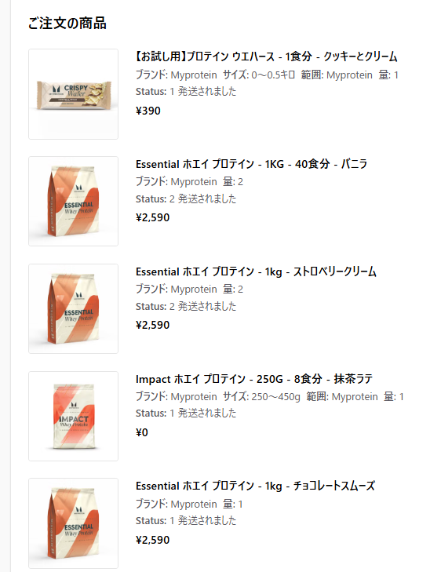
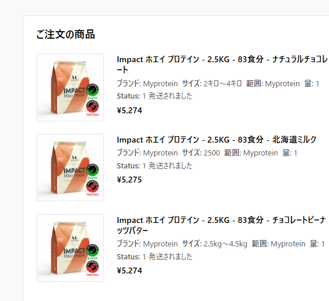
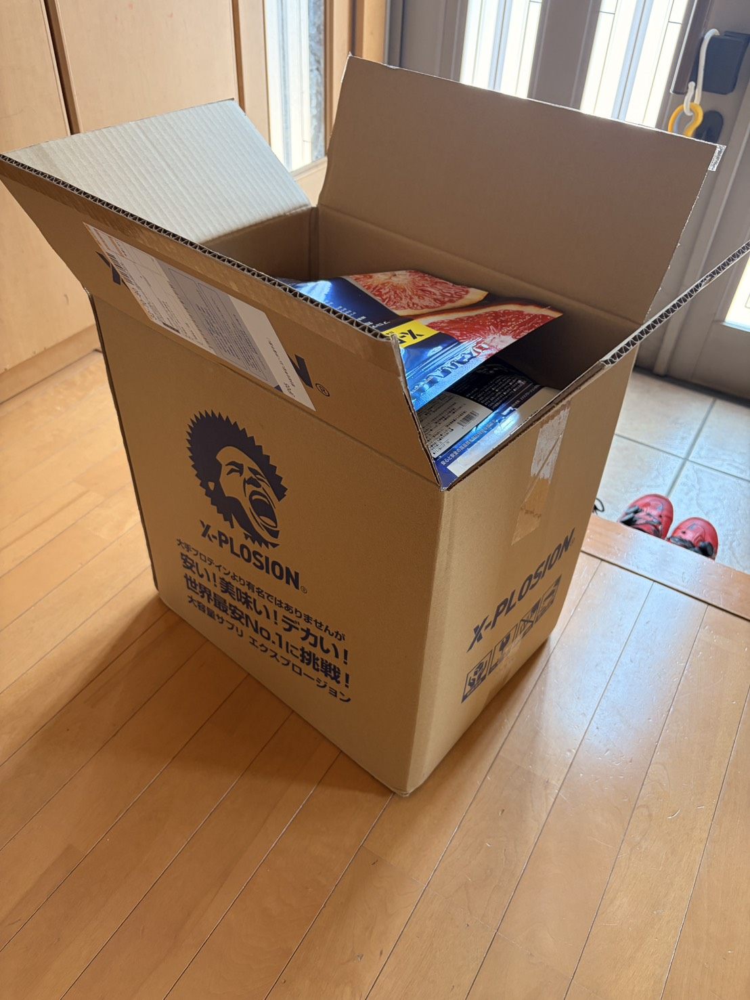

マイプロからエクスプロージョンに変えた理由。最安より「考えずに買えるか」だった
安いプロテインを探していたはずだった。気づいたら、関税ラインと戦っていた。富士ヒルゴールドより先に、注文額の計算力が鍛えられていた。

そもそもなぜプロテインの話をしているのか
富士ヒルゴールドを目指す実験を始めてから、練習だけでなく食事や補給も少しずつ見直している。その中で地味に重要なのがプロテインである。派手さはない。だが効いてくる。
ローラーで20分走をやったり、15分走を2本やったりすると、終わったあとにちゃんと回復させないと翌日に踏めない。私にとってプロテインは、筋肉を増やす特別なアイテムというより、明日もローラーで地獄を見るための準備である。
私は今、エクスプロージョンのプロテインを飲んでいる。ただ、以前はマイプロテインを使っていた。そこで今回は、マイプロとエクスプロージョンを比較して、どちらが自分に合っているのかをAIに相談しながら整理してみた。先に結論を言っておくと、安いのはマイプロだった。それでも私はエクスプロージョンを選んだ。一見すると少し変だが、自分の中では理由がある。
以前はマイプロを使っていた。しかも、安かった
もともとはマイプロテインだった。具体的には、Essentialというホエイプロテインの1kgを、いくつかの味でまとめ買いしていた。バニラ、ストロベリークリーム、チョコレートスムーズ。購入履歴を見ると、価格は1kgで2,590円。これはかなり安い。ごまかさずに言うと、今飲んでいるエクスプロージョンより安い。
ただし、ここでいきなり注意が入る。Essentialは、マイプロの中でも手頃な価格を優先したコスパ重視モデルらしい。Impactと比べると炭水化物、脂質、カロリーが少し高めで、日常的にたくさん消費する人や予算を抑えたい人向け。つまり、エクスプロージョンやImpactと完全に同じ土俵で「どっちが上」と言い切るのは雑である。ここを流すと、比較した気になっているだけの記事になる。危ない。
なのでこの記事では、「プロテインとしての優劣」ではなく、「過去に自分が買っていたマイプロ」と「今の自分が使っているエクスプロージョン」を、運用面も含めて比べる。主役は成分表の完全比較ではない。練習後に飲み続けるものを、どれだけ考えずに買えるかである。


つまり「高いから乗り換えた」という分かりやすい話ではない。むしろ逆である。過去の購入履歴だけを見ると、マイプロはかなり強い。だが、そのままマイプロを使い続けなかった。理由は、この安さの裏にある面倒くささだった。
マイプロは「セールで安く買うもの」という印象が強い。つまり、欲しい時に何も考えず買うのではなく、毎回こういうことを考える必要がある。
- タイミング今は買い時なのか、もっと安いセールが来るのか
- 在庫欲しい味は残っているのか
- 関税注文額が関税ラインを超えないか
プロテインは乳製品扱いなので、海外通販だと関税に引っ掛かるとダメージが大きい。安さを狙うはずが、いつの間にか注文額の計算ゲームになっていた。安く買うために待っていたのに、いざ買おうとしたら欲しい味がない。こうなると、もう何をしているのか分からなくなる。最安を狙うのは、思ったより面倒なのである。
そして一番大きいのが、これだ。あの2,590円は、価格改定の前のセール価格だった。つまり今、同じ値段で買えるとは限らない。今いくらなのかも、正直よく分からない。セール価格を決めるのはマイプロ側で、私ではない。こちらがどれだけ買いたくても、いくらで出すかは向こうの都合で決まる。最安は、こちらがコントロールできない不確定要素の上に乗っている。
エクスプロージョンに変えた。安くはない。でも買いやすい
今飲んでいるのはエクスプロージョン。マイプロの過去購入価格と比べると、正直こちらの方が高い。あとでg単価でちゃんと出すが、結論は変わらない。過去に安く買えていたのはマイプロだった。
それでもエクスプロージョンには、分かりやすいメリットがある。いつでも買いやすいことだ。6個買えば割引もあるし、セールを追いかけなくていい。関税ラインを気にして注文額を調整しなくてもいい。価格を決めるのは向こうだが、少なくとも「セールを引けたかどうか」で値段が乱高下することはない。いつ見ても、だいたい同じ顔で売っている。
この「面倒が少ない」というのは、続けるうえでかなり大きい。プロテインは一回買って終わりではなく、練習後に何度も飲むもの。続けるものだからこそ、買うたびに毎回悩まなくていいのは助かる。気合いで飲むものではなく、練習後に何も考えず飲めるくらいがちょうどいい。

今飲んでいるのは甘さゼロ カフェオレ味
具体的には、エクスプロージョンの甘さゼロ カフェオレ味。1杯あたりの記録は、今のところ以下で固定している。
- エネルギー117kcal
- たんぱく質21.3g
- 脂質1.8g
- 炭水化物4.1g
この味はかなり好みに合っていた。カフェオレ感はある。でも甘くない。甘いプロテインが苦手な時でも飲みやすいし、水で飲んでも変に重くないのが良い。エクスプロージョンは、水で飲む爽やか系のフレーバーが多い印象がある。
味選びは、全部を自分で試すのはさすがに無理なので、ネットのレビューを参考にした。「水で飲みやすそうか」「甘すぎなさそうか」「毎日飲んでも飽きにくそうか」を見て選んだ。結果として、甘さゼロ カフェオレ味はかなり当たりだった。
AIに「価格の見方」を相談した
AIには主に価格面を相談した。感覚ではなく、g単価で比較したかったからだ。プロテインは容量や1杯あたりの量が商品によって違うので、単純な販売価格だけでは比較しにくい。
AIからも、「比較するなら販売価格ではなくg単価で見るべき」「できれば1杯あたり、たんぱく質1gあたりの価格も見るといい」と返ってきた。これはたしかにその通りである。袋の値段だけ見て安く感じても、内容量やたんぱく質量が違えば実際のコスパは変わる。ここは素直に採用した。
ただし今回、途中でひとつ修正が入った。マイプロのEssentialは、Impactと同じノリで比べるものではなかった。手頃な価格を優先したコスパ重視モデルで、成分も少し違う。なので見るべきはこのあたり。1kgあたりの価格、1杯あたりの価格、たんぱく質1gあたりの価格、送料込みか、セール時か通常時か、まとめ買い割引があるか。そして、そもそも比較している商品が同じ立ち位置なのか。今回は実価格まで入れつつ、Essentialは参考値として扱う。
比較表（2026/06/13時点）
マイプロは私が実際に買ったEssentialとImpactの購入履歴、エクスプロージョンは公式の3kgとまとめ割を基準にした。価格は変動するので、あくまで時点のスナップショットである。
| 商品 | 容量 | 価格 | 1kg単価 | 1g単価 | 1食あたり |
|---|---|---|---|---|---|
| マイプロ Essential（実購入・セール） | 1kg | 2,590円 | 2,590円 | 2.59円 | 約65円（25g） |
| マイプロ Impact（2025年購入・参考） | 2.5kg | 5,274円前後 | 約2,110円 | 約2.11円 | 約63円（30g換算） |
| エクスプロ 甘さゼロ カフェオレ | 3kg | 10,980円 | 3,660円 | 3.66円 | 約110円（30g） |
| エクスプロ ＋6個まとめ割 | 18kg | 62,880円 | 約3,493円 | 約3.49円 | 約105円（30g） |
補足。マイプロのEssential 1kgは公式表示で40食分（1食25g）。この2,590円は実際の購入履歴に残っていた価格だが、EssentialはImpactより手頃な価格を優先したモデルなので、単純に「マイプロ代表」として扱うのは乱暴である。Impactの2025年購入履歴もかなり安いが、これも当時の購入価格であり、今この値段で買える保証はない。現在のセール価格はマイプロ側次第なので、ここでは正直に「不明」としておく。エクスプロージョンはまとめ割で3点750円OFF、6点3,000円OFF、3,000円以上で送料無料。10,980円×6個から3,000円引いて62,880円、という計算である。
で、結局どっちが安いのか
粉1gあたりで並べると、こうなる。
はっきりしている。過去の購入履歴だけで見れば、安かったのはマイプロである。Essentialは2.59円/g、Impactの2025年購入分は約2.11円/g。エクスプロージョンは1kg換算で3.66円/g、6個まとめ割でも3.49円/g。粉1gあたりで見て、マイプロの方が安い。これは認めるしかない。
ただし、ここで「だからマイプロの勝ち」と雑に締めるのは違う。Essentialはコスパ重視モデルで、Impactともエクスプロージョンとも立ち位置が少し違う。Impactの購入履歴も2025年のセール込み価格で、今の価格ではない。つまりこの表は、現在いつでも再現できる価格表ではなく、「自分が過去にこう買えていた」という記録である。
ここで思い出してほしい。あの2.59円/gも、約2.11円/gも、次に同じ条件で買える保証はどこにもない。そして次にいくらで売るかを決めるのはマイプロ側で、私ではない。つまりマイプロの安さは「運よくセールを引けたら」という条件付き。一方エクスプロージョンの3.49〜3.66円/gは、いつ見てもだいたいこの値段で買える。安さでは負けているが、確実さでは勝っている。
仮説、実行、結果、考察
仮説は、「プロテインは最安だけで選ぶより、買いやすさや価格の確実さも含めて考えた方がよい」というもの。マイプロは安く買える可能性がある一方で、セール、在庫、関税ラインを考える手間がある。
実行したのは、以前まとめ買いしていたマイプロのEssential（1kg 2,590円）、2025年に買っていたImpact（2.5kg 5,274円前後）、現在使っているエクスプロージョンの整理。AIには、g単価でどちらがどのくらい安いのか、価格差を見たいと相談した。
結果として、過去の購入履歴ではマイプロが安かった。Essentialが2.59円/g、Impact参考値が約2.11円/g、エクスプロージョンは3.49〜3.66円/g。ただし、Essentialは廉価モデルで、Impactやエクスプロージョンと完全に同列ではない。さらに、その価格はセール込みの過去価格であり、現在この値段で買える保証はない。しかも価格を決めるのはマイプロ側で、こちらは引けるかどうかを待つだけである。
考察。自分にとってプロテインは、練習後の回復を支える日用品に近い。毎日飲むものだから、「運よくセールを引けたら安い」より、「いつ買っても同じ値段で、すぐ届く」方が、続けるうえでは効いてくる。安さで勝つマイプロと、確実さで勝つエクスプロージョン。今の私は、後者を取った。
まとめと、次にやること
結論。安いのはマイプロだった。それでも私はエクスプロージョンを選んだ。安さでは負けているのに、である。我ながら矛盾しているが、理由ははっきりしている。マイプロの安さはセール価格頼みで、その値段を決めるのは私ではない。いつ・いくらで買えるかが向こうの都合に握られている安さは、毎日続けるものの基準にしづらい。
一方エクスプロージョンは、いつ見てもだいたい同じ値段で、考えずに買えて、すぐ届く。富士ヒルに向けて練習を続けるなら、プロテイン選びも「最安」だけでなく「続けやすさ」と「価格の確実さ」で見た方がいい気がしている。最安を追いかけて関税ラインと戦うより、何も考えず練習後に飲める方が、たぶん長く続く。
次にやることは、マイプロの価格改定後の現在価格をちゃんと拾って、もう一度g単価をぶつけること。そこで「いつでも確実に」エクスプロージョンより安く買える条件が見つかれば、また天秤にかける。逆に、相変わらずセールを引けるかどうかのギャンブルなら、エクスプロージョン継続でいい。今のところは、後者だと思っている。